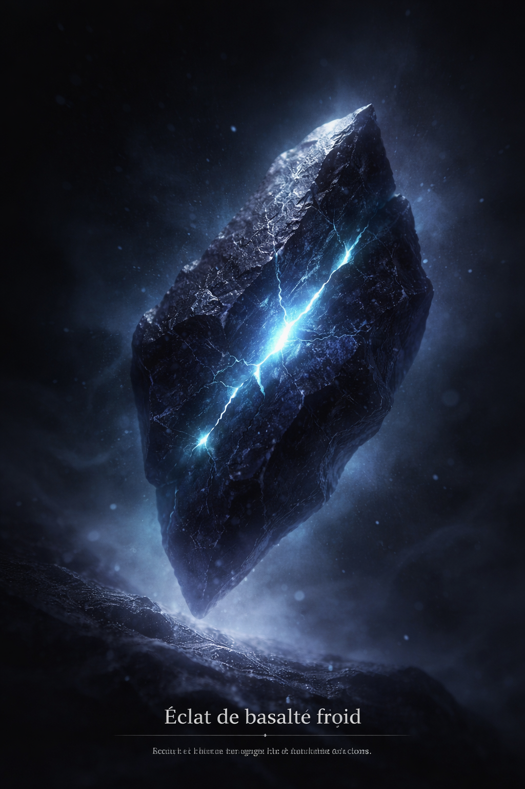

Éclat de basalte froid
Fragment dense, presque absorbant. Sa surface retient la lumière comme si elle hésitait à la rendre. Quand je le tiens longtemps, une pulsation lente apparaît sous mes doigts.
Note : aucune température mesurable, sensation de gel persistante.